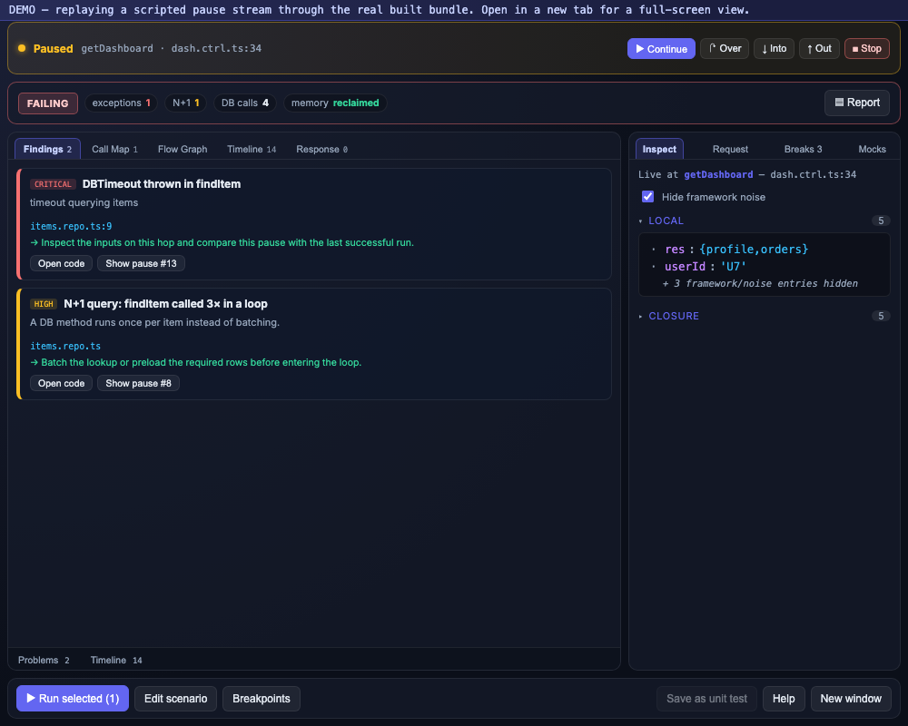
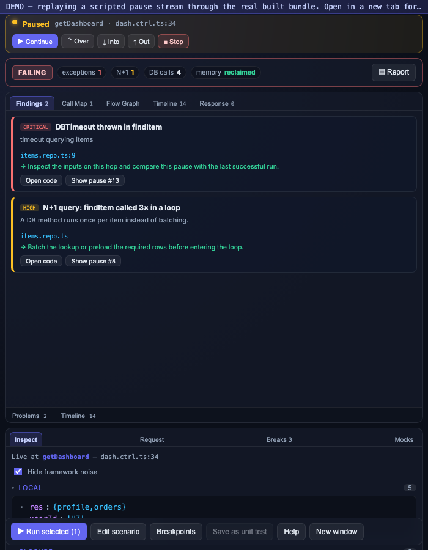

See it in action
The run-centric workspace: the behavioural verdict first, evidence and controls around it.
Click any image for full size — captured from the real built webview.

Run-centric workspace
Verdict strip, ranked findings, the nested Call Map, run history rail, and the live inspector — the debugger answer, not raw frames.
product
Prove a change
Save a baseline, compare a later run (REGRESSION / CHANGED / EQUIVALENT), and verify a behaviour contract — the same engine that gates CI.
product
Request editor
Every request field — method, URL, headers, body, and response-value extraction — with reorder and duplicate.
product
Guided first run
Three ways to start — observe a Postman request, run a scenario, or let an agent/CI collect — over an honest precondition checklist.
product
Responsive · medium
At a standard editor-panel width the run rail collapses and evidence chips stay in a scrollable strip.
product
Responsive · narrow
At a narrow width evidence and context stack vertically, with the runtime bar and actions kept sticky.
product